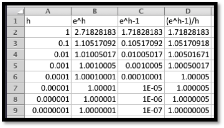
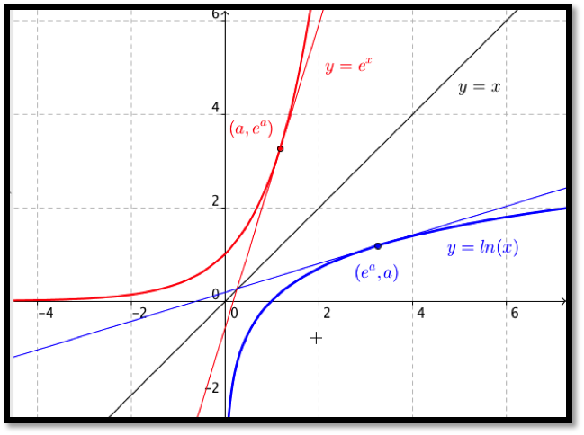

We start by recalling the formal definition, with a slight adjustment in notation to match the standard conventions:
Definition4.1.1.Derivative.
For a function \(f(x)\text{,}\) the instantaneous rate of change of \(f(x)\text{,}\) or the derivative of \(f(x)\text{,}\) denoted as \(f'(x)\text{,}\) is defined as
We also want to recall some alternate notations we may use.
Notation: Let \(y=f(x)\text{.}\)
The derivative of \(f(x)\) is denoted as \(f'(x)\) or \(\frac{d}{dx} f(x) \)or \(dy/dx\text{.}\)
The derivative at \(x=x_0\) is denoted as \(f'(x_0 )\) or \(\frac{dy}{dx}|_{x=x_0}\text{.}\)
As is typical in mathematics, when there are several forms, we use the one that makes the most sense in the case on which we are working.
Subsection4.1.2Derivatives of monomials
Our first rule for symbolic differentiation gives the derivative of a monomial.
Claim4.1.2.Monomial rule.
If \(f(x)=a x^n\text{,}\) then \(f'(x)=n*a*x^{n-1}\text{.}\)
This rule is a generalization of the rule we found in section 3.2 using trendlines. There we noticed that the derivative is linear whenever the function is quadratic. The rule is valid for all values of n, not just for positive whole numbers. We can now find derivatives for expressions that can be converted into this form.
Example4.1.3.Derivatives of monomials.
Using our first rule of symbolic differentiation, find the derivatives of the following functions:
For parts (d) and (e), we converted roots and fractions so they looked like monomials with negative or fractional exponents and applied our rule.
Probably the most convincing demonstration of the truth of this rule is for us to use Excel and the techniques of the last chapter to find a function, its numeric and symbolic derivatives and see that the symbolic and numeric derivatives are the same up to round off error. We would also like to see how the symbolic derivative can be derived from the formal definition of derivative in simple cases.
Example4.1.4.Derivatives of linear functions.
From the formal definition of derivative, if \(f(x)=a x+b\text{,}\) then show \(f'(x)=a\text{.}\)
The last step is justified by noting that as \(h\) gets very small the value of \(a\) simply stays \(a\text{.}\)
We want to look at a quadratic function, since we will need to take a limit in that case.
Example4.1.5.A quadratic derivative.
From the formal definition of derivative, if \(f(x)=a x^2\text{,}\) then show \(f'(x)=2 a x\text{.}\)
Solution.
Using our definition:
\begin{align*}
f'(x)\amp =lim_{h\to0}\frac{f(x+h)-f(x)}{h}\\
\amp =\lim_{h\to0}\frac{(a (x+h)^2)-(a x^2)}{h}\\
\amp =\lim_{h\to0}\frac{(a x^2+2 a h x +a h^2)-(a x^2)}{h}\\
\amp =\lim_{h\to0}\frac{2 a h x +a h^2}{h} =\lim_{h\to0}\frac{h(2 a x +a h)}{h}\\
\amp =\lim_{h\to0}(2ax+ah)=2ax\text{.}
\end{align*}
The last step is justified by noting that as \(h\) gets very small the value of \(ah\) also gets very small.
We can modify this last example to find a formula for the derivative of \(f(x)=x^n\) for any positive integer \(n\text{.}\) We recall that
The last step is justified by noting that as \(h\) gets very small, the value of \(h\) times a polynomial in \(h\) also gets very small.
Subsection4.1.3Derivatives of Exponential Functions
Claim4.1.7.Exponential Rule.
If \(f(x)=a*e^x\text{,}\) then \(f'(x)=a*e^x\text{.}\)
The elegance of this rule is part of the reason why mathematicians and math books like base \(e\) for exponential functions. However we more typically want to use exponential functions based on a rate of growth or decay.
Claim4.1.8.General Exponential Rule.
If \(f(x)=b*a^x\text{,}\) then \(f'(x)=b*\ln(a)*a^x\text{.}\)
Example4.1.9.Exponential examples.
Using the exponential rules of symbolic differentiation, find the derivatives of the following functions:
In some ways, the most convincing argument for these rules is to use Excel to plot the function, its numeric derivative and its symbolic derivative for a variety of values and see that the numeric and symbolic derivatives are the same up to rounding error. We would also like to make an argument from the formal definition of the derivative.
Example4.1.10.Justification of first exponential rule.
From the formal definition of derivative show that if \(f(x)=e^x\text{,}\) then \(f'(x)=e^x\text{.}\)
It suffices to show that \(\lim_{h\to0}\frac{e^h-1}{h} =1\text{.}\) This can be done by starting with a formal definition of \(e\text{.}\) For this class it can also be done by using Excel to evaluate the expression for smaller and smaller values of \(h\text{.}\)

It seems clear that \(\lim_{h\to0}\frac{e^h-1}{h} =1\text{.}\)
Example4.1.11.Justification of second exponential rule.
From the formal definition of derivative, if \(f(x)=a^x\text{,}\) then show \(f'(x)=\ln(a)*a^x\text{.}\)
Solution.
We start by mimicking the last problem. At a key step we will recall that by replacing \(h\) with \(h \ln(a)\) in our previous justification, we obtain \(a^x=\left({e^{\ln(a)}}\right)^x=e^{ \ln(a)x}=e^{ x\ln(a)}\text{.}\) We also want to note that
We are most likely to see exponential functions in the context of continuously compounding interest.
Example4.1.12.Computing future rate of change.
If I have a dollar in the bank at an effective annual interest rate of 6%, compounded continuously, at what rate is the principal increasing after ten years?
Solution.
We know \(f(x)=(1.06)^x\text{.}\) Thus \(f'(x)=\ln(1.06)(1.06)^x\text{.}\) We evaluate this at 10 years and get \(f'(10)=\ln(1.06)(1.06)^{10}=.10435074\text{.}\) Thus after 10 years, I am earning a little more than 10 cents a year.
Subsection4.1.4Derivatives of Logarithmic Functions
For a last rule for this section we want to find the derivative of \(f(x)=a \ln(x)\text{.}\)
Claim4.1.13.Logarithmic Rule.
If \(f(x)=a \ln(x)\text{,}\) then \(f'(x)=a/x\text{.}\)
Example4.1.14.Derivatives of logarithmic functions.
Using the logarithmic rule of symbolic differentiation, find the derivatives of the following functions:
Our argument for this derivative rule will be more geometric.
Example4.1.15.Justification of logarithmic rule.
If \(f(x)=\ln(x)\text{,}\) then show \(f'(x)=1/x\text{.}\)
Solution.
We start by noticing that \(y=e^x\) and \(y=\ln(x)\) are inverse functions. That means their graphs can be obtained by reflecting across the line \(y=x\text{.}\)

The slope of the tangent line at \((a,e^a)\) is \(e^a\) by the exponential rule. Symmetry tells us the slope of the line tangent to \(y=\ln(x)\) at \((e^a,a)\) is \(1/e^a\text{.}\) Letting \(b=e^a\text{,}\) the slope of the line tangent to \(y=\ln(x)\) at \((b,\ln(b))\) is \(1/b\text{.}\) Thus \(\frac{d}{dx}(\ln(x))=1/x\text{.}\)
Example4.1.16.Slope of a tangent line.
Find the slope of the line tangent to \(y=\ln(x)\) at \(x=10\text{.}\) Compare your answer to the estimate given by the approximation techniques of the last chapter.
Solution.
Since \(f(x)=\ln(x)\text{,}\)\(f'(10) =1/10=0.1\text{.}\) When I use Excel to compute \((f(10.001)-f(9.999))/.002\) I get \(0.1000000003\text{.}\)
Reading Questions4.1.5Reading Check
1.Reading check, Elementary Derivatives.
This question checks your reading comprehension of the material is section 4.1, Elementary Derivatives, of Business Calculus with Excel. Based on your reading, select all statements that are correct. There may be more than one correct answer. The statements may appear in what seems to be a random order.
The monomial rule for taking the derivative of \(f(x)=a*x^n\) is only valid when \(n\) is an integer.
If \(f(x)=a*\ln(x)\) then \(f'(x)=a/x\text{.}\)
If \(f(x)=b*a^x\) then \(f'(x)=b*\ln(a)*a^x\text{.}\)
If \(f(x)=a*x^{\pi}\) then \(f'(x)=a*\ln(pi)*x^{\pi}\text{.}\)
If \(f(x)=a*\ln(x^n)\) then \(f'(x)=a*n/x^{n-1}\text{.}\)
If \(f(x)=a*e^x\) then \(f'(x)=a*e^x\text{.}\)
If \(f(x)=a*x^n\) then \(f'(x)=n*a*x^{n-1}\text{.}\)
For the following exercises, use the symbolic rules to find the derivative at the specified point. Use Excel to find the numeric approximation using the “calculator formula.” To how many digits do the two methods agree?
13.
\(f(x)=x^2\text{.}\) Evaluate at \(x=2\text{.}\)
Solution.
\(f'(x)=2x\text{,}\) so \(f'(2)=4\text{.}\) The numeric derivative agrees to 12 decimal digits.
14.
\(g(x)=5x\text{.}\) Evaluate at \(x=7\text{.}\)
15.
\(h(x)=1.06^x\text{.}\) Evaluate at \(x=10\text{.}\)
Solution.
\(h'(x)=\ln(1.06)(1.06)^x\text{.}\) So \(h'(10)=\ln(1.06)(1.06)^{10}\ (\approx 0.104)\text{.}\) The numeric derivative agrees to 10 decimal digits.
16.
\(f(x)=e^x\text{.}\) Evaluate at \(x=5\text{.}\)
17.
\(k(x)=\ln(x)\text{.}\) Evaluate at \(x=100\text{.}\)
Solution.
\(k'(x)=1/x\text{.}\) So \(k'(100)=0.01\text{.}\) The numeric derivative agrees to 13 decimal digits.
18.
\(m(x)=3/x\text{.}\) Evaluate at \(x=\pi\text{.}\)
Exercise Group.
Find tangent lines to the given curves at the indicated points.
19.
\(f(x)=3x^4\text{.}\) At \(x=1\text{.}\)
Solution.
We need a point: if \(x =1\) then \(y=f(1)=3\text{.}\)
We need a slope: \(f'(x)=12 x^3\text{.}\) Hence \(m=f'(1)=12\text{.}\)
Find the line: \(y-y_0=m(x-x_0 )\text{,}\) so \(y-3=12(x-1)\text{.}\)
Comments
We can rewrite the tangent line as \(y=12x-9\)
We could have used the slope intercept version of the line to solve the problem as well. Then \(y=mx+b\text{.}\) We know \(m = 12\text{,}\) and we can solve for \(b\) by letting \(x = 1\) and \(y = 3\text{.}\)
20.
\(g(x)=a x\text{.}\) At \(x=b\text{.}\)
21.
\(h(x)=1.05^x\text{.}\) At \(x=20\text{.}\)
Solution.
We need a point: if \(x =20\) then \(y=h(20)=(1.05)^{20}\approx 2.6533\text{.}\)
We need a slope: \(h'(x)=\ln(1.05) (1.05)^x\text{.}\)
Hence \(m=\ln(1.05) (1.05)^{20}=0.12945\)
Find the line: \(y-y_0=m(x-x_0 )\text{,}\) so \(y-2.6533=0.12945(x-20)\text{.}\)